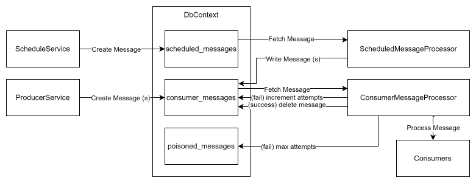

ProducerService
Resolves consumers for a given payload and writes messages to the consumer_messages table for processing.
ScheduleService
Writes scheduled messages to the scheduled_messages table.
Tables
ConfigureAsyncMonolith() maps three tables (with an optional schema and table prefix):
consumer_messages: one row per pending message per consumer.scheduled_messages: recurring schedules and when they are next due.poisoned_messages: messages that failed every attempt, with the last error.
ConsumerMessageProcessor
One background processor runs per rail. Each cycle it:
- Claims a batch in a short transaction: it reads due messages (locking rows on PostgreSQL, SQL Server, MySQL and MariaDB), then for each one counts the attempt and leases it by moving
available_afterpast the consumer's timeout plus 30 seconds. The update only applies if the message is unchanged since it was read, so only one processor can claim it. - Consumes each claimed message outside any transaction, in its own DI scope, so consumers can use the database freely.
- Completes each message in its own short write: deleted on success, otherwise retried after a backoff delay, or moved to
poisoned_messagesafter its last attempt. If its lease was taken over meanwhile, nothing is changed.
If the app stops mid-message, the message becomes available again when its lease expires.
ScheduledMessageProcessor
Reads due schedules and, for each one, moves it to its next occurrence (conditionally, so each occurrence fires once across instances) and produces a message for every consumer of its payload. A schedule that can't be evaluated is checked again an hour later without affecting the others. It also deletes expired poisoned messages when PoisonedMessageRetention is set.
Notes 📋
- After a batch that wasn't full a processor waits
IdlePollInterval; after a full batch it waitsBusyPollInterval. While batches keep failing (for example during a database outage) the wait doubles up to 30 seconds. - Consumers and payloads are found by scanning the registered assemblies at startup, and the registry is checked for name clashes and payloads without consumers when the host starts.